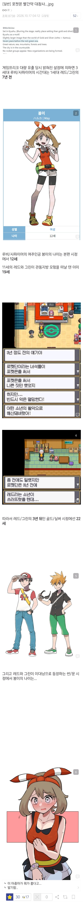

30 · 14 · 6 분 전 · 원문

수집 당시 댓글 14개
NMNSe · 2 시간 전
플마님 · 2 시간 전
SQ · 1 시간 전
ㄴㅉ · 1 시간 전
0살대마법사 · 52 분 전
SOL반도체TOP2 · 9 분 전
몇살인디
↳ 답글 · 엡터 · 8 분 전
레드나이 +8
↳ 답글 · SOL반도체TOP2 · 7 분 전
30 아줌마가 저런 옷 입고... 어흐
↳ 답글 · 나를묶고가둔다면사랑도묶 · 6 분 전
후.. 서른봄이.. 대꼴..
↳ 답글 · 오이알러지환자 · 6 분 전
썬문에서 레드가 20대후반에서 30대초반으로 추정됨레드 나이를 29살이라고 추정해보면 봄이 나이는 내일모레 마흔
주둥이척수반사 · 9 분 전
Lopkm · 6 분 전
천고뉴비 · 5 분 전
롶융운눔 · 1 분 전
3세대가 시간적으로 1세대보다 전이라고? 말이 되나?
댓글
수집 당시 댓글 14개
NMNSe · 2 시간 전
플마님 · 2 시간 전
SQ · 1 시간 전
ㄴㅉ · 1 시간 전
0살대마법사 · 52 분 전
SOL반도체TOP2 · 9 분 전
몇살인디
· 엡터 · 8 분 전
레드나이 +8
· SOL반도체TOP2 · 7 분 전
30 아줌마가 저런 옷 입고... 어흐
· 나를묶고가둔다면사랑도묶 · 6 분 전
후.. 서른봄이.. 대꼴..
· 오이알러지환자 · 6 분 전
썬문에서 레드가 20대후반에서 30대초반으로 추정됨
레드 나이를 29살이라고 추정해보면 봄이 나이는 내일모레 마흔
주둥이척수반사 · 9 분 전
Lopkm · 6 분 전
천고뉴비 · 5 분 전
롶융운눔 · 1 분 전
3세대가 시간적으로 1세대보다 전이라고? 말이 되나?